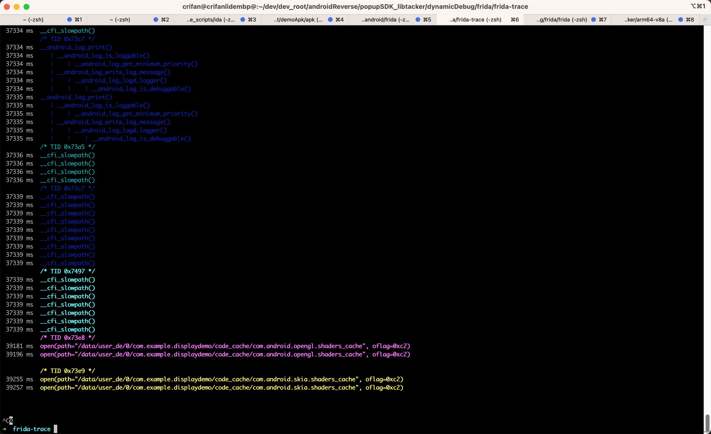

DisplayDemo
用frida-trace调试安卓app：com.example.displaydemo
命令
frida-trace -U -f com.example.displaydemo -I libdl.so -I liblog.so -I libtacker.so -i open -i openat -i dlopen
输出
截图

log日志
frida-trace -U -f com.example.displaydemo -I libdl.so -I liblog.so -I libtacker.so -i open -i openat -i dlopen
...
__android_log_buf_write: Loaded handler at "/Users/crifan/dev/dev_root/androidReverse/popupSDK_libtacker/dynamicDebug/frida/frida-trace/__handlers__/liblog.so/__android_log_buf_write.js"
__android_log_is_debuggable: Loaded handler at "/Users/crifan/dev/dev_root/androidReverse/popupSDK_libtacker/dynamicDebug/frida/frida-trace/__handlers__/liblog.so/__android_log_is_debuggable.js"
android_openEventTagMap: Loaded handler at "/Users/crifan/dev/dev_root/androidReverse/popupSDK_libtacker/dynamicDebug/frida/frida-trace/__handlers__/liblog.so/android_openEventTagMap.js"
open: Loaded handler at "/Users/crifan/dev/dev_root/androidReverse/popupSDK_libtacker/dynamicDebug/frida/frida-trace/__handlers__/libc.so/open.js"
openat: Loaded handler at "/Users/crifan/dev/dev_root/androidReverse/popupSDK_libtacker/dynamicDebug/frida/frida-trace/__handlers__/libc.so/openat.js"
Started tracing 82 functions. Press Ctrl+C to stop.
/* TID 0x73a5 */
628 ms dlsym(handle=0x28d2598c92f4b5bd, symbol="Java_sun_nio_fs_UnixNativeDispatcher_access0")
641 ms dlsym(handle=0x28d2598c92f4b5bd, symbol="Java_sun_nio_fs_UnixNativeDispatcher_access0__JI")
642 ms dlsym(handle=0x18091f93b592f005, symbol="Java_sun_nio_fs_UnixNativeDispatcher_access0")
642 ms dlsym(handle=0x18091f93b592f005, symbol="Java_sun_nio_fs_UnixNativeDispatcher_access0__JI")
642 ms dlsym(handle=0xf61d9d184f5bd255, symbol="Java_sun_nio_fs_UnixNativeDispatcher_access0")
642 ms dlsym(handle=0xf61d9d184f5bd255, symbol="Java_sun_nio_fs_UnixNativeDispatcher_access0__JI")
642 ms dlsym(handle=0xf93963b9819f875f, symbol="Java_sun_nio_fs_UnixNativeDispatcher_access0")
642 ms dlsym(handle=0xf93963b9819f875f, symbol="Java_sun_nio_fs_UnixNativeDispatcher_access0__JI")
642 ms dlsym(handle=0xb6965c803b1ea0bf, symbol="Java_sun_nio_fs_UnixNativeDispatcher_access0")
642 ms dlsym(handle=0xb6965c803b1ea0bf, symbol="Java_sun_nio_fs_UnixNativeDispatcher_access0__JI")
642 ms dlsym(handle=0xf33483d7107b39b5, symbol="Java_sun_nio_fs_UnixNativeDispatcher_access0")
642 ms dlsym(handle=0xf33483d7107b39b5, symbol="Java_sun_nio_fs_UnixNativeDispatcher_access0__JI")
642 ms dlsym(handle=0x49a6c69ccf1943e5, symbol="Java_sun_nio_fs_UnixNativeDispatcher_access0")
642 ms dlsym(handle=0x49a6c69ccf1943e5, symbol="Java_sun_nio_fs_UnixNativeDispatcher_access0__JI")
643 ms dlsym(handle=0x12b477e61386e20d, symbol="Java_sun_nio_fs_UnixNativeDispatcher_access0")
643 ms dlsym(handle=0x12b477e61386e20d, symbol="Java_sun_nio_fs_UnixNativeDispatcher_access0__JI")
643 ms dlsym(handle=0x3cb81b9cf29f00eb, symbol="Java_sun_nio_fs_UnixNativeDispatcher_access0")
646 ms __android_log_buf_write()
646 ms | __android_log_is_loggable()
646 ms | | __android_log_get_minimum_priority()
646 ms | __android_log_write_log_message()
646 ms | | __android_log_logd_logger()
646 ms | | | __android_log_is_debuggable()
647 ms __android_log_buf_write()
647 ms | __android_log_is_loggable()
647 ms | | __android_log_get_minimum_priority()
647 ms | __android_log_write_log_message()
647 ms | | __android_log_logd_logger()
647 ms | | | __android_log_is_debuggable()
。。。
1 ms | | | __android_log_is_debuggable()
651 ms open(path="/data/app/~~OyO-UMCLSaECmfJvvRSy1w==/com.example.displaydemo-EXz8U1Y8uB9h_Modc1C__Q==/base.apk", oflag=0x80000)
657 ms __android_log_buf_write()
。。。
676 ms open(path="/proc/self/cmdline", oflag=0x80000)
679 ms dl_iterate_phdr()
679 ms android_dlopen_ext()
681 ms dlsym(handle=0x6c3b15dbd25a16d1, symbol="oatdata")
681 ms dlsym(handle=0x6c3b15dbd25a16d1, symbol="oatlastword")
681 ms dlsym(handle=0x6c3b15dbd25a16d1, symbol="oatdatabimgrelro")
681 ms dlerror()
681 ms dlsym(handle=0x6c3b15dbd25a16d1, symbol="oatbss")
681 ms dlerror()
681 ms dlsym(handle=0x6c3b15dbd25a16d1, symbol="oatdex")
681 ms dlsym(handle=0x6c3b15dbd25a16d1, symbol="oatdexlastword")
681 ms dl_iterate_phdr()
681 ms open(path="/data/app/~~OyO-UMCLSaECmfJvvRSy1w==/com.example.displaydemo-EXz8U1Y8uB9h_Modc1C__Q==/oat/arm64/base.vdex", oflag=0x0)
683 ms open(path="/data/app/~~OyO-UMCLSaECmfJvvRSy1w==/com.example.displaydemo-EXz8U1Y8uB9h_Modc1C__Q==/base.apk", oflag=0x0)
684 ms open(path="/apex/com.android.art/javalib/arm64/boot.art", oflag=0x0)
684 ms open(path="/system/framework/arm64/boot-framework.art", oflag=0x0)
684 ms open(path="/data/app/~~OyO-UMCLSaECmfJvvRSy1w==/com.example.displaydemo-EXz8U1Y8uB9h_Modc1C__Q==/oat/arm64/base.art", oflag=0x0)
702 ms __android_log_buf_write()
702 ms | __android_log_is_loggable()
702 ms | | __android_log_get_minimum_priority()
702 ms | __android_log_write_log_message()
702 ms | | __android_log_logd_logger()
702 ms | | | __android_log_is_debuggable()
703 ms __android_log_buf_write()
703 ms | __android_log_is_loggable()
703 ms | | __android_log_get_minimum_priority()
703 ms | __android_log_write_log_message()
703 ms | | __android_log_logd_logger()
703 ms | | | __android_log_is_debuggable()
704 ms open(path="/data/app/~~OyO-UMCLSaECmfJvvRSy1w==/com.example.displaydemo-EXz8U1Y8uB9h_Modc1C__Q==/base.apk", oflag=0x80000)
705 ms open(path="/product/overlay/NavigationBarMode2Button/NavigationBarMode2ButtonOverlay.apk", oflag=0x80000)
712 ms __android_log_buf_write()
712 ms | __android_log_is_loggable()
712 ms | | __android_log_get_minimum_priority()
712 ms | __android_log_write_log_message()
712 ms | | __android_log_logd_logger()
712 ms | | | __android_log_is_debuggable()
713 ms __android_log_buf_write()
713 ms | __android_log_is_loggable()
713 ms | | __android_log_get_minimum_priority()
713 ms | __android_log_write_log_message()
713 ms | | __android_log_logd_logger()
713 ms | | | __android_log_is_debuggable()
718 ms __android_log_is_loggable()
718 ms | __android_log_get_minimum_priority()
/* TID 0x73cb */
739 ms dlsym(handle=0x8473cc9900a85ecd, symbol="InitEsxProfile")
739 ms open(path="/data/vendor/gpu/esx_config_com.example.displaydemo.txt", oflag=0x0)
739 ms open(path="/data/vendor/gpu/esx_config.txt", oflag=0x0)
739 ms open(path="/data/misc/gpu/esx_config_com.example.displaydemo.txt", oflag=0x0)
739 ms open(path="/data/misc/gpu/esx_config.txt", oflag=0x0)
/* TID 0x73a5 */
752 ms __android_log_buf_write()
753 ms | __android_log_is_loggable()
753 ms | | __android_log_get_minimum_priority()
753 ms | __android_log_write_log_message()
753 ms | | __android_log_logd_logger()
753 ms | | | __android_log_is_debuggable()
769 ms __cfi_slowpath()
769 ms __cfi_slowpath()
783 ms __cfi_slowpath()
。。。
964 ms dladdr(addr=0x6dc20f4b08, info=0x6d6dbfc760)
964 ms __android_log_print()
964 ms | __android_log_is_loggable()
964 ms | | __android_log_get_minimum_priority()
964 ms | __android_log_write_log_message()
964 ms | | __android_log_logd_logger()
964 ms | | | __android_log_is_debuggable()
965 ms android_dlopen_ext()
965 ms dlsym(handle=0xf4f687c6329daa95, symbol="HMI")
966 ms open(path="/data/vendor/gpu/esx_config_com.example.displaydemo.txt", oflag=0x0)
966 ms open(path="/data/vendor/gpu/esx_config.txt", oflag=0x0)
966 ms open(path="/data/misc/gpu/esx_config_com.example.displaydemo.txt", oflag=0x0)
966 ms open(path="/data/misc/gpu/esx_config.txt", oflag=0x0)
966 ms open(path="./adreno_config.txt", oflag=0x0)
966 ms open(path="/data/vendor/gpu//adreno_config.txt", oflag=0x0)
966 ms open(path="/data/misc/gpu//adreno_config.txt", oflag=0x0)
966 ms open(path="./yamato_panel.txt", oflag=0x0)
966 ms open(path="/data/vendor/gpu//yamato_panel.txt", oflag=0x0)
966 ms open(path="/data/misc/gpu//yamato_panel.txt", oflag=0x0)
966 ms open(path="/data/vendor/gpu/esx_config_com.example.displaydemo.txt", oflag=0x0)
966 ms open(path="/data/vendor/gpu/esx_config.txt", oflag=0x0)
966 ms open(path="/data/misc/gpu/esx_config_com.example.displaydemo.txt", oflag=0x0)
967 ms open(path="/data/misc/gpu/esx_config.txt", oflag=0x0)
967 ms __android_log_print()
967 ms | __android_log_is_loggable()
967 ms | | __android_log_get_minimum_priority()
967 ms | __android_log_write_log_message()
967 ms | | __android_log_logd_logger()
967 ms | | | __android_log_is_debuggable()
967 ms open(path="/data/vendor/gpu/esx_config_com.example.displaydemo.txt", oflag=0x0)
967 ms open(path="/data/vendor/gpu/esx_config.txt", oflag=0x0)
967 ms open(path="/data/misc/gpu/esx_config_com.example.displaydemo.txt", oflag=0x0)
967 ms open(path="/data/misc/gpu/esx_config.txt", oflag=0x0)
968 ms open(path="/sys/devices/system/cpu/present", oflag=0x0)
968 ms open(path="/sys/devices/system/cpu/cpu0/cpu_capacity", oflag=0x0)
968 ms open(path="/sys/devices/system/cpu/cpu0/cpufreq/cpuinfo_max_freq", oflag=0x0)
968 ms open(path="/sys/devices/system/cpu/cpu1/cpufreq/cpuinfo_max_freq", oflag=0x0)
968 ms open(path="/sys/devices/system/cpu/cpu2/cpufreq/cpuinfo_max_freq", oflag=0x0)
968 ms open(path="/sys/devices/system/cpu/cpu3/cpufreq/cpuinfo_max_freq", oflag=0x0)
968 ms open(path="/sys/devices/system/cpu/cpu4/cpufreq/cpuinfo_max_freq", oflag=0x0)
968 ms open(path="/sys/devices/system/cpu/cpu5/cpufreq/cpuinfo_max_freq", oflag=0x0)
968 ms open(path="/sys/devices/system/cpu/cpu6/cpufreq/cpuinfo_max_freq", oflag=0x0)
968 ms open(path="/sys/devices/system/cpu/cpu7/cpufreq/cpuinfo_max_freq", oflag=0x0)
969 ms open(path="/sys/class/kgsl/kgsl-3d0/gpu_model", oflag=0x0)
969 ms __android_log_print()
969 ms | __android_log_is_loggable()
969 ms | | __android_log_get_minimum_priority()
969 ms | __android_log_write_log_message()
969 ms | | __android_log_logd_logger()
969 ms | | | __android_log_is_debuggable()
969 ms __android_log_print()
969 ms | __android_log_is_loggable()
969 ms | | __android_log_get_minimum_priority()
969 ms | __android_log_write_log_message()
969 ms | | __android_log_logd_logger()
969 ms | | | __android_log_is_debuggable()
969 ms dlopen(path="libEGL_adreno.so", mode=0x2)
970 ms dlsym(handle=0xf9e57fda79bd3c09, symbol="eglSetBlobCacheFuncsANDROID")
971 ms dlsym(handle=0x5dae32eb4dcc0329, symbol="glGetStringi")
971 ms dlsym(handle=0x231259e63d1aef61, symbol="glGetStringi")
971 ms dlsym(handle=0x5dae32eb4dcc0329, symbol="glGetStringi")
972 ms dlsym(handle=0x231259e63d1aef61, symbol="glGetStringi")
972 ms dlsym(handle=0x5dae32eb4dcc0329, symbol="glMemoryBarrier")
972 ms dlsym(handle=0x231259e63d1aef61, symbol="glMemoryBarrier")
972 ms dlsym(handle=0x5dae32eb4dcc0329, symbol="glBindVertexArray")
972 ms dlsym(handle=0x231259e63d1aef61, symbol="glBindVertexArray")
972 ms dlsym(handle=0x5dae32eb4dcc0329, symbol="glDeleteVertexArrays")
972 ms dlsym(handle=0x231259e63d1aef61, symbol="glDeleteVertexArrays")
972 ms dlsym(handle=0x5dae32eb4dcc0329, symbol="glGenVertexArrays")
972 ms dlsym(handle=0x231259e63d1aef61, symbol="glGenVertexArrays")
972 ms dlsym(handle=0x5dae32eb4dcc0329, symbol="glPatchParameteri")
972 ms dlsym(handle=0x231259e63d1aef61, symbol="glPatchParameteri")
972 ms dlsym(handle=0x5dae32eb4dcc0329, symbol="glBindFragDataLocationEXT")
972 ms dlsym(handle=0x231259e63d1aef61, symbol="glBindFragDataLocationEXT")
972 ms dlsym(handle=0x5dae32eb4dcc0329, symbol="glBindFragDataLocationIndexedEXT")
972 ms dlsym(handle=0x231259e63d1aef61, symbol="glBindFragDataLocationIndexedEXT")
972 ms dlsym(handle=0x5dae32eb4dcc0329, symbol="glBlendBarrierKHR")
972 ms dlsym(handle=0x231259e63d1aef61, symbol="glBlendBarrierKHR")
972 ms dlsym(handle=0x5dae32eb4dcc0329, symbol="glDrawArraysInstanced")
972 ms dlsym(handle=0x231259e63d1aef61, symbol="glDrawArraysInstanced")
972 ms dlsym(handle=0x5dae32eb4dcc0329, symbol="glDrawElementsInstanced")
972 ms dlsym(handle=0x231259e63d1aef61, symbol="glDrawElementsInstanced")
972 ms dlsym(handle=0x5dae32eb4dcc0329, symbol="glDrawBuffers")
972 ms dlsym(handle=0x231259e63d1aef61, symbol="glDrawBuffers")
973 ms dlsym(handle=0x5dae32eb4dcc0329, symbol="glReadBuffer")
973 ms dlsym(handle=0x231259e63d1aef61, symbol="glReadBuffer")
973 ms dlsym(handle=0x5dae32eb4dcc0329, symbol="glDrawArraysIndirect")
973 ms dlsym(handle=0x231259e63d1aef61, symbol="glDrawArraysIndirect")
973 ms dlsym(handle=0x5dae32eb4dcc0329, symbol="glDrawElementsIndirect")
973 ms dlsym(handle=0x231259e63d1aef61, symbol="glDrawElementsIndirect")
973 ms dlsym(handle=0x5dae32eb4dcc0329, symbol="glDrawRangeElements")
973 ms dlsym(handle=0x231259e63d1aef61, symbol="glDrawRangeElements")
973 ms dlsym(handle=0x5dae32eb4dcc0329, symbol="glGetMultisamplefv")
973 ms dlsym(handle=0x231259e63d1aef61, symbol="glGetMultisamplefv")
973 ms dlsym(handle=0x5dae32eb4dcc0329, symbol="glGetTexLevelParameteriv")
973 ms dlsym(handle=0x231259e63d1aef61, symbol="glGetTexLevelParameteriv")
973 ms dlsym(handle=0x5dae32eb4dcc0329, symbol="glTexBuffer")
973 ms dlsym(handle=0x231259e63d1aef61, symbol="glTexBuffer")
973 ms dlsym(handle=0x5dae32eb4dcc0329, symbol="glTexBufferRange")
973 ms dlsym(handle=0x231259e63d1aef61, symbol="glTexBufferRange")
973 ms dlsym(handle=0x5dae32eb4dcc0329, symbol="glTexStorage2D")
973 ms dlsym(handle=0x231259e63d1aef61, symbol="glTexStorage2D")
973 ms dlsym(handle=0x5dae32eb4dcc0329, symbol="glDiscardFramebufferEXT")
973 ms dlsym(handle=0x231259e63d1aef61, symbol="glDiscardFramebufferEXT")
973 ms dlsym(handle=0x5dae32eb4dcc0329, symbol="glEndTilingQCOM")
973 ms dlsym(handle=0x231259e63d1aef61, symbol="glEndTilingQCOM")
973 ms dlsym(handle=0x5dae32eb4dcc0329, symbol="glStartTilingQCOM")
974 ms dlsym(handle=0x231259e63d1aef61, symbol="glStartTilingQCOM")
974 ms dlsym(handle=0x5dae32eb4dcc0329, symbol="glVertexAttribDivisor")
974 ms dlsym(handle=0x231259e63d1aef61, symbol="glVertexAttribDivisor")
974 ms dlsym(handle=0x5dae32eb4dcc0329, symbol="glVertexAttribIPointer")
974 ms dlsym(handle=0x231259e63d1aef61, symbol="glVertexAttribIPointer")
974 ms dlsym(handle=0x5dae32eb4dcc0329, symbol="glBlitFramebuffer")
974 ms dlsym(handle=0x231259e63d1aef61, symbol="glBlitFramebuffer")
974 ms dlsym(handle=0x5dae32eb4dcc0329, symbol="glRenderbufferStorageMultisample")
974 ms dlsym(handle=0x231259e63d1aef61, symbol="glRenderbufferStorageMultisample")
974 ms dlsym(handle=0x5dae32eb4dcc0329, symbol="glFramebufferTexture2DMultisampleEXT")
974 ms dlsym(handle=0x231259e63d1aef61, symbol="glFramebufferTexture2DMultisampleEXT")
974 ms dlsym(handle=0x5dae32eb4dcc0329, symbol="glRenderbufferStorageMultisampleEXT")
974 ms dlsym(handle=0x231259e63d1aef61, symbol="glRenderbufferStorageMultisampleEXT")
974 ms dlsym(handle=0x5dae32eb4dcc0329, symbol="glUnmapBuffer")
974 ms dlsym(handle=0x231259e63d1aef61, symbol="glUnmapBuffer")
974 ms dlsym(handle=0x5dae32eb4dcc0329, symbol="glFlushMappedBufferRange")
974 ms dlsym(handle=0x231259e63d1aef61, symbol="glFlushMappedBufferRange")
974 ms dlsym(handle=0x5dae32eb4dcc0329, symbol="glMapBufferRange")
974 ms dlsym(handle=0x231259e63d1aef61, symbol="glMapBufferRange")
974 ms dlsym(handle=0x5dae32eb4dcc0329, symbol="glInsertEventMarkerEXT")
974 ms dlsym(handle=0x231259e63d1aef61, symbol="glInsertEventMarkerEXT")
974 ms dlsym(handle=0x5dae32eb4dcc0329, symbol="glPopGroupMarkerEXT")
974 ms dlsym(handle=0x231259e63d1aef61, symbol="glPopGroupMarkerEXT")
974 ms dlsym(handle=0x5dae32eb4dcc0329, symbol="glPushGroupMarkerEXT")
975 ms dlsym(handle=0x231259e63d1aef61, symbol="glPushGroupMarkerEXT")
975 ms dlsym(handle=0x5dae32eb4dcc0329, symbol="glGetProgramResourceLocation")
975 ms dlsym(handle=0x231259e63d1aef61, symbol="glGetProgramResourceLocation")
975 ms dlsym(handle=0x5dae32eb4dcc0329, symbol="glDebugMessageCallbackKHR")
975 ms dlsym(handle=0x231259e63d1aef61, symbol="glDebugMessageCallbackKHR")
975 ms dlsym(handle=0x5dae32eb4dcc0329, symbol="glDebugMessageControlKHR")
975 ms dlsym(handle=0x231259e63d1aef61, symbol="glDebugMessageControlKHR")
975 ms dlsym(handle=0x5dae32eb4dcc0329, symbol="glDebugMessageInsertKHR")
975 ms dlsym(handle=0x231259e63d1aef61, symbol="glDebugMessageInsertKHR")
975 ms dlsym(handle=0x5dae32eb4dcc0329, symbol="glGetDebugMessageLogKHR")
975 ms dlsym(handle=0x231259e63d1aef61, symbol="glGetDebugMessageLogKHR")
975 ms dlsym(handle=0x5dae32eb4dcc0329, symbol="glObjectLabelKHR")
975 ms dlsym(handle=0x231259e63d1aef61, symbol="glObjectLabelKHR")
975 ms dlsym(handle=0x5dae32eb4dcc0329, symbol="glPopDebugGroupKHR")
975 ms dlsym(handle=0x231259e63d1aef61, symbol="glPopDebugGroupKHR")
975 ms dlsym(handle=0x5dae32eb4dcc0329, symbol="glPushDebugGroupKHR")
975 ms dlsym(handle=0x231259e63d1aef61, symbol="glPushDebugGroupKHR")
975 ms dlsym(handle=0x5dae32eb4dcc0329, symbol="glClientWaitSync")
975 ms dlsym(handle=0x231259e63d1aef61, symbol="glClientWaitSync")
975 ms dlsym(handle=0x5dae32eb4dcc0329, symbol="glDeleteSync")
975 ms dlsym(handle=0x231259e63d1aef61, symbol="glDeleteSync")
975 ms dlsym(handle=0x5dae32eb4dcc0329, symbol="glFenceSync")
975 ms dlsym(handle=0x231259e63d1aef61, symbol="glFenceSync")
975 ms dlsym(handle=0x5dae32eb4dcc0329, symbol="glIsSync")
975 ms dlsym(handle=0x231259e63d1aef61, symbol="glIsSync")
976 ms dlsym(handle=0x5dae32eb4dcc0329, symbol="glWaitSync")
976 ms dlsym(handle=0x231259e63d1aef61, symbol="glWaitSync")
976 ms dlsym(handle=0x5dae32eb4dcc0329, symbol="glGetInternalformativ")
976 ms dlsym(handle=0x231259e63d1aef61, symbol="glGetInternalformativ")
976 ms dlsym(handle=0x5dae32eb4dcc0329, symbol="glGetProgramBinary")
976 ms dlsym(handle=0x231259e63d1aef61, symbol="glGetProgramBinary")
976 ms dlsym(handle=0x5dae32eb4dcc0329, symbol="glProgramBinary")
976 ms dlsym(handle=0x231259e63d1aef61, symbol="glProgramBinary")
976 ms dlsym(handle=0x5dae32eb4dcc0329, symbol="glProgramParameteri")
976 ms dlsym(handle=0x231259e63d1aef61, symbol="glProgramParameteri")
976 ms dlsym(handle=0x5dae32eb4dcc0329, symbol="glBindSampler")
976 ms dlsym(handle=0x231259e63d1aef61, symbol="glBindSampler")
976 ms dlsym(handle=0x5dae32eb4dcc0329, symbol="glDeleteSamplers")
976 ms dlsym(handle=0x231259e63d1aef61, symbol="glDeleteSamplers")
976 ms dlsym(handle=0x5dae32eb4dcc0329, symbol="glGenSamplers")
976 ms dlsym(handle=0x231259e63d1aef61, symbol="glGenSamplers")
976 ms dlsym(handle=0x5dae32eb4dcc0329, symbol="glSamplerParameteri")
976 ms dlsym(handle=0x231259e63d1aef61, symbol="glSamplerParameteri")
976 ms dlsym(handle=0x5dae32eb4dcc0329, symbol="glSamplerParameteriv")
976 ms dlsym(handle=0x231259e63d1aef61, symbol="glSamplerParameteriv")
976 ms dlsym(handle=0x5dae32eb4dcc0329, symbol="glBeginQuery")
976 ms dlsym(handle=0x231259e63d1aef61, symbol="glBeginQuery")
976 ms dlsym(handle=0x5dae32eb4dcc0329, symbol="glDeleteQueries")
976 ms dlsym(handle=0x231259e63d1aef61, symbol="glDeleteQueries")
976 ms dlsym(handle=0x5dae32eb4dcc0329, symbol="glEndQuery")
977 ms dlsym(handle=0x231259e63d1aef61, symbol="glEndQuery")
977 ms dlsym(handle=0x5dae32eb4dcc0329, symbol="glGenQueries")
977 ms dlsym(handle=0x231259e63d1aef61, symbol="glGenQueries")
977 ms dlsym(handle=0x5dae32eb4dcc0329, symbol="glGetQueryObjectuiv")
977 ms dlsym(handle=0x231259e63d1aef61, symbol="glGetQueryObjectuiv")
977 ms dlsym(handle=0x5dae32eb4dcc0329, symbol="glGetQueryiv")
977 ms dlsym(handle=0x231259e63d1aef61, symbol="glGetQueryiv")
977 ms dlsym(handle=0x5dae32eb4dcc0329, symbol="glInvalidateFramebuffer")
977 ms dlsym(handle=0x231259e63d1aef61, symbol="glInvalidateFramebuffer")
977 ms dlsym(handle=0x5dae32eb4dcc0329, symbol="glInvalidateSubFramebuffer")
977 ms dlsym(handle=0x231259e63d1aef61, symbol="glInvalidateSubFramebuffer")
977 ms open(path="/data/user_de/0/com.example.displaydemo/code_cache/com.android.skia.shaders_cache", oflag=0x0)
990 ms __android_log_print()
990 ms | __android_log_is_loggable()
990 ms | | __android_log_get_minimum_priority()
990 ms | __android_log_write_log_message()
990 ms | | __android_log_logd_logger()
990 ms | | | __android_log_is_debuggable()
990 ms __android_log_print()
990 ms | __android_log_is_loggable()
990 ms | | __android_log_get_minimum_priority()
990 ms | __android_log_write_log_message()
990 ms | | __android_log_logd_logger()
990 ms | | | __android_log_is_debuggable()
990 ms dlerror()
990 ms android_dlopen_ext()
991 ms dlsym(handle=0x32a24e38d5386b55, symbol="HIDL_FETCH_IMapper")
991 ms __android_log_is_loggable()
991 ms | __android_log_get_minimum_priority()
991 ms dlopen(path="libadreno_utils.so", mode=0x2)
992 ms dlsym(handle=0xf1188f74383613ef, symbol="compute_aligned_width_and_height")
992 ms dlsym(handle=0xf1188f74383613ef, symbol="compute_fmt_aligned_width_and_height")
992 ms dlsym(handle=0xf1188f74383613ef, symbol="compute_surface_padding")
992 ms dlsym(handle=0xf1188f74383613ef, symbol="compute_compressedfmt_aligned_width_and_height")
992 ms dlsym(handle=0xf1188f74383613ef, symbol="isUBWCSupportedByGpu")
992 ms dlsym(handle=0xf1188f74383613ef, symbol="get_gpu_pixel_alignment")
992 ms dlsym(handle=0xf1188f74383613ef, symbol="adreno_get_metadata_blob_size")
992 ms dlsym(handle=0xf1188f74383613ef, symbol="adreno_init_memory_layout")
992 ms dlsym(handle=0xf1188f74383613ef, symbol="adreno_get_aligned_gpu_buffer_size")
992 ms __cfi_slowpath()
/* TID 0x73cc */
1406 ms __cfi_slowpath()
1407 ms __cfi_slowpath()
1407 ms __cfi_slowpath()
1407 ms __cfi_slowpath()
1407 ms __cfi_slowpath()
...
/* TID 0x73a5 */
35028 ms __cfi_slowpath()
35028 ms __cfi_slowpath()
35035 ms __android_log_buf_write()
35036 ms | __android_log_is_loggable()
。。。
/* TID 0x73c9 */
35113 ms open(path="/data/user_de/0/com.example.displaydemo/code_cache/com.android.opengl.shaders_cache", oflag=0x0)
36036 ms open(path="/proc/self/cmdline", oflag=0x80000)
36037 ms open(path="/proc/self/cmdline", oflag=0x80000)
36037 ms open(path="/proc/self/cmdline", oflag=0x80000)
/* TID 0x73a5 */
。。。
36345 ms __cfi_slowpath()
37083 ms open(path="/data/app/~~OyO-UMCLSaECmfJvvRSy1w==/com.example.displaydemo-EXz8U1Y8uB9h_Modc1C__Q==/lib/arm64/libtacker.so", oflag=0x0)
37085 ms open(path="/data/app/~~OyO-UMCLSaECmfJvvRSy1w==/com.example.displaydemo-EXz8U1Y8uB9h_Modc1C__Q==/base.apk", oflag=0x80000)
37086 ms android_dlopen_ext()
37094 ms dlsym(handle=0x2bb94aab7ee5d9eb, symbol="JNI_OnLoad")
37097 ms __android_log_print()
37097 ms | __android_log_is_loggable()
37097 ms | | __android_log_get_minimum_priority()
37097 ms | __android_log_write_log_message()
37097 ms | | __android_log_logd_logger()
37097 ms | | | __android_log_is_debuggable()
37099 ms dlerror()
37100 ms android_dlopen_ext()
37111 ms | dlsym(handle=0x0, symbol="android_get_exported_namespace")
37111 ms | dlopen(path="libRS_internal.so", mode=0x1)
37141 ms | dlsym(handle=0xb510c3446c65bd65, symbol="rsAllocation1DData")
37141 ms | dlsym(handle=0xb510c3446c65bd65, symbol="rsAllocation1DRead")
37141 ms | dlsym(handle=0xb510c3446c65bd65, symbol="rsAllocation2DData")
37141 ms | dlsym(handle=0xb510c3446c65bd65, symbol="rsAllocation2DRead")
37141 ms | dlsym(handle=0xb510c3446c65bd65, symbol="rsAllocation3DData")
37141 ms | dlsym(handle=0xb510c3446c65bd65, symbol="rsAllocation3DRead")
37141 ms | dlsym(handle=0xb510c3446c65bd65, symbol="rsAllocationAdapterCreate")
37141 ms | dlsym(handle=0xb510c3446c65bd65, symbol="rsAllocationAdapterOffset")
37141 ms | dlsym(handle=0xb510c3446c65bd65, symbol="rsAllocationCopy2DRange")
37141 ms | dlsym(handle=0xb510c3446c65bd65, symbol="rsAllocationCopy3DRange")
37141 ms | dlsym(handle=0xb510c3446c65bd65, symbol="rsAllocationCopyToBitmap")
37142 ms | dlsym(handle=0xb510c3446c65bd65, symbol="rsAllocationCreateFromBitmap")
37142 ms | dlsym(handle=0xb510c3446c65bd65, symbol="rsAllocationCreateStrided")
37142 ms | dlsym(handle=0xb510c3446c65bd65, symbol="rsAllocationCreateTyped")
37142 ms | dlsym(handle=0xb510c3446c65bd65, symbol="rsAllocationCubeCreateFromBitmap")
37142 ms | dlsym(handle=0xb510c3446c65bd65, symbol="rsAllocationElementData")
37142 ms | dlsym(handle=0xb510c3446c65bd65, symbol="rsAllocationElementRead")
37142 ms | dlsym(handle=0xb510c3446c65bd65, symbol="rsAllocationGenerateMipmaps")
37142 ms | dlsym(handle=0xb510c3446c65bd65, symbol="rsAllocationGetPointer")
37142 ms | dlsym(handle=0xb510c3446c65bd65, symbol="rsAllocationGetSurface")
37142 ms | dlsym(handle=0xb510c3446c65bd65, symbol="rsaAllocationGetType")
37142 ms | dlsym(handle=0xb510c3446c65bd65, symbol="rsAllocationIoReceive")
37142 ms | dlsym(handle=0xb510c3446c65bd65, symbol="rsAllocationIoSend")
37142 ms | dlsym(handle=0xb510c3446c65bd65, symbol="rsAllocationRead")
37142 ms | dlsym(handle=0xb510c3446c65bd65, symbol="rsAllocationResize1D")
37142 ms | dlsym(handle=0xb510c3446c65bd65, symbol="rsAllocationSetSurface")
37142 ms | dlsym(handle=0xb510c3446c65bd65, symbol="rsAllocationSyncAll")
37142 ms | dlsym(handle=0xb510c3446c65bd65, symbol="rsAllocationSetupBufferQueue")
37142 ms | dlsym(handle=0xb510c3446c65bd65, symbol="rsAllocationShareBufferQueue")
37142 ms | dlsym(handle=0xb510c3446c65bd65, symbol="rsAssignName")
37142 ms | dlsym(handle=0xb510c3446c65bd65, symbol="rsClosureCreate")
37142 ms | dlsym(handle=0xb510c3446c65bd65, symbol="rsClosureSetArg")
37142 ms | dlsym(handle=0xb510c3446c65bd65, symbol="rsClosureSetGlobal")
37142 ms | dlsym(handle=0xb510c3446c65bd65, symbol="rsContextCreateVendor")
37142 ms | dlsym(handle=0xb510c3446c65bd65, symbol="rsContextDeinitToClient")
37142 ms | dlsym(handle=0xb510c3446c65bd65, symbol="rsContextDestroy")
37142 ms | dlsym(handle=0xb510c3446c65bd65, symbol="rsContextDump")
37142 ms | dlsym(handle=0xb510c3446c65bd65, symbol="rsContextFinish")
37142 ms | dlsym(handle=0xb510c3446c65bd65, symbol="rsContextGetMessage")
37142 ms | dlsym(handle=0xb510c3446c65bd65, symbol="rsContextInitToClient")
37142 ms | dlsym(handle=0xb510c3446c65bd65, symbol="rsContextPeekMessage")
37142 ms | dlsym(handle=0xb510c3446c65bd65, symbol="rsContextSendMessage")
37142 ms | dlsym(handle=0xb510c3446c65bd65, symbol="rsContextSetPriority")
37143 ms | dlsym(handle=0xb510c3446c65bd65, symbol="rsContextSetCacheDir")
37143 ms | dlsym(handle=0xb510c3446c65bd65, symbol="rsElementCreate2")
37143 ms | dlsym(handle=0xb510c3446c65bd65, symbol="rsElementCreate")
37143 ms | dlsym(handle=0xb510c3446c65bd65, symbol="rsaElementGetNativeData")
37143 ms | dlsym(handle=0xb510c3446c65bd65, symbol="rsaElementGetSubElements")
37143 ms | dlsym(handle=0xb510c3446c65bd65, symbol="rsaGetName")
37143 ms | dlsym(handle=0xb510c3446c65bd65, symbol="rsInvokeClosureCreate")
37143 ms | dlsym(handle=0xb510c3446c65bd65, symbol="rsObjDestroy")
37143 ms | dlsym(handle=0xb510c3446c65bd65, symbol="rsSamplerCreate")
37143 ms | dlsym(handle=0xb510c3446c65bd65, symbol="rsScriptBindAllocation")
37143 ms | dlsym(handle=0xb510c3446c65bd65, symbol="rsScriptCCreate")
37143 ms | dlsym(handle=0xb510c3446c65bd65, symbol="rsScriptFieldIDCreate")
37143 ms | dlsym(handle=0xb510c3446c65bd65, symbol="rsScriptForEachMulti")
37143 ms | dlsym(handle=0xb510c3446c65bd65, symbol="rsScriptGetVarV")
37143 ms | dlsym(handle=0xb510c3446c65bd65, symbol="rsScriptGroup2Create")
37143 ms | dlsym(handle=0xb510c3446c65bd65, symbol="rsScriptGroupCreate")
37143 ms | dlsym(handle=0xb510c3446c65bd65, symbol="rsScriptGroupExecute")
37143 ms | dlsym(handle=0xb510c3446c65bd65, symbol="rsScriptGroupSetInput")
37143 ms | dlsym(handle=0xb510c3446c65bd65, symbol="rsScriptGroupSetOutput")
37143 ms | dlsym(handle=0xb510c3446c65bd65, symbol="rsScriptIntrinsicCreate")
37143 ms | dlsym(handle=0xb510c3446c65bd65, symbol="rsScriptInvoke")
37143 ms | dlsym(handle=0xb510c3446c65bd65, symbol="rsScriptInvokeIDCreate")
37143 ms | dlsym(handle=0xb510c3446c65bd65, symbol="rsScriptInvokeV")
37143 ms | dlsym(handle=0xb510c3446c65bd65, symbol="rsScriptKernelIDCreate")
37143 ms | dlsym(handle=0xb510c3446c65bd65, symbol="rsScriptReduce")
37143 ms | dlsym(handle=0xb510c3446c65bd65, symbol="rsScriptSetTimeZone")
37143 ms | dlsym(handle=0xb510c3446c65bd65, symbol="rsScriptSetVarD")
37143 ms | dlsym(handle=0xb510c3446c65bd65, symbol="rsScriptSetVarF")
37143 ms | dlsym(handle=0xb510c3446c65bd65, symbol="rsScriptSetVarI")
37143 ms | dlsym(handle=0xb510c3446c65bd65, symbol="rsScriptSetVarJ")
37143 ms | dlsym(handle=0xb510c3446c65bd65, symbol="rsScriptSetVarObj")
37143 ms | dlsym(handle=0xb510c3446c65bd65, symbol="rsScriptSetVarVE")
37143 ms | dlsym(handle=0xb510c3446c65bd65, symbol="rsScriptSetVarV")
37143 ms | dlsym(handle=0xb510c3446c65bd65, symbol="rsTypeCreate")
37143 ms | dlsym(handle=0xb510c3446c65bd65, symbol="rsaTypeGetNativeData")
37144 ms dlsym(handle=0xdd4f837609790777, symbol="HIDL_FETCH_IDevice")
...
/* TID 0x748b */
37148 ms dlopen(path="libRSDriver_adreno.so", mode=0x1)
37169 ms dlerror()
37169 ms dlsym(handle=0xd30b16fb5b2b6c41, symbol="rsdHalQueryVersion")
37169 ms dlsym(handle=0xd30b16fb5b2b6c41, symbol="rsdHalQueryHal")
37169 ms dlsym(handle=0xd30b16fb5b2b6c41, symbol="rsdHalInit")
37169 ms dlsym(handle=0xd30b16fb5b2b6c41, symbol="rsdHalAbort")
37169 ms open(path="/proc/cpuinfo", oflag=0x80000)
37170 ms open(path="./adreno_config.txt", oflag=0x0)
37170 ms open(path="/data/vendor/gpu//adreno_config.txt", oflag=0x0)
37170 ms open(path="/data/misc/gpu//adreno_config.txt", oflag=0x0)
37170 ms open(path="./yamato_panel.txt", oflag=0x0)
37171 ms open(path="/data/vendor/gpu//yamato_panel.txt", oflag=0x0)
37171 ms open(path="/data/misc/gpu//yamato_panel.txt", oflag=0x0)
37172 ms __cfi_slowpath()
37180 ms dlopen(path="libllvm-qcom.so", mode=0x2)
37256 ms dlsym(handle=0x2dd005fbeae03129, symbol="cl_compiler_create_llvm_instance")
37256 ms dlsym(handle=0x2dd005fbeae03129, symbol="cl_compiler_destroy_llvm_instance")
37256 ms dlsym(handle=0x2dd005fbeae03129, symbol="cl_compiler_compile_source")
37256 ms dlsym(handle=0x2dd005fbeae03129, symbol="cl_compiler_link_program")
37256 ms dlsym(handle=0x2dd005fbeae03129, symbol="cl_compiler_get_error_code")
37256 ms dlsym(handle=0x2dd005fbeae03129, symbol="cl_compiler_get_build_log")
37256 ms dlsym(handle=0x2dd005fbeae03129, symbol="cl_compiler_query_handle_type")
37256 ms dlsym(handle=0x2dd005fbeae03129, symbol="cl_compiler_handle_to_executable")
37256 ms dlsym(handle=0x2dd005fbeae03129, symbol="cl_compiler_free_handle")
37256 ms dlsym(handle=0x2dd005fbeae03129, symbol="cl_compiler_disassemble")
37256 ms dlsym(handle=0x2dd005fbeae03129, symbol="cl_compiler_free_assembly")
37256 ms dlsym(handle=0x2dd005fbeae03129, symbol="cl_compiler_program_get_ddl_data")
37256 ms dlsym(handle=0x2dd005fbeae03129, symbol="cl_compiler_handle_from_binary")
37257 ms dlsym(handle=0x2dd005fbeae03129, symbol="cl_compiler_handle_create_binary")
37257 ms dlsym(handle=0x2dd005fbeae03129, symbol="cl_compiler_program_free_binary")
37257 ms dlsym(handle=0x2dd005fbeae03129, symbol="cl_compiler_interpret_printf_buffer")
37257 ms dlsym(handle=0x2dd005fbeae03129, symbol="cl_compiler_query_version_string")
37264 ms __cfi_slowpath()
37265 ms __cfi_slowpath()
37265 ms __cfi_slowpath()
37265 ms __cfi_slowpath()
37265 ms dlopen(path="libqti-perfd-client.so", mode=0x2)
...
37266 ms __cfi_slowpath()
37266 ms dlopen(path="librs_adreno_sha1.so", mode=0x2)
37269 ms dlsym(handle=0xe42754d5434639f, symbol="libllvm_qcom_so_SHA1")
37269 ms dlsym(handle=0xe42754d5434639f, symbol="libCB_so_SHA1")
37269 ms dlsym(handle=0xe42754d5434639f, symbol="libgsl_so_SHA1")
37269 ms dlsym(handle=0xe42754d5434639f, symbol="librs_adreno_so_SHA1")
37269 ms dlsym(handle=0xe42754d5434639f, symbol="libRSDriver_adreno_so_SHA1")
37269 ms dlclose(handle=0xe42754d5434639f)
37269 ms __cfi_slowpath()
37270 ms __android_log_print()
37270 ms | __android_log_is_loggable()
37270 ms | | __android_log_get_minimum_priority()
37270 ms | __android_log_write_log_message()
37270 ms | | __android_log_logd_logger()
37270 ms | | | __android_log_is_debuggable()
/* TID 0x73a5 */
37270 ms dlopen(path="libRSCacheDir.so", mode=0x1)
37272 ms dlsym(handle=0xaaa10682b389f92b, symbol="rsQueryCacheDir")
...
37339 ms __cfi_slowpath()
/* TID 0x73e8 */
39181 ms open(path="/data/user_de/0/com.example.displaydemo/code_cache/com.android.opengl.shaders_cache", oflag=0xc2)
39196 ms open(path="/data/user_de/0/com.example.displaydemo/code_cache/com.android.opengl.shaders_cache", oflag=0xc2)
/* TID 0x73e9 */
39255 ms open(path="/data/user_de/0/com.example.displaydemo/code_cache/com.android.skia.shaders_cache", oflag=0xc2)
39257 ms open(path="/data/user_de/0/com.example.displaydemo/code_cache/com.android.skia.shaders_cache", oflag=0xc2)